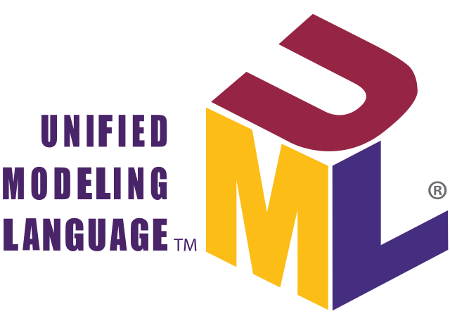
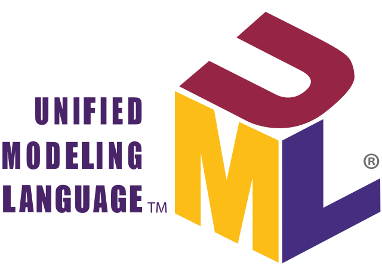

ANALISIS Y DESARROLLO DE SOFTWARE (2675841)
INFORME DE ENTREGABLES PARA EL PROYECTO DE DESARROLLO DE SOFTWARE
GA4-220501095-AA2-EV03
 
UML
UML es el lenguaje de modelado unificado estándar, utilizado para plasmar un análisis
o un diseño, mediante figuras y patrones estándar a nivel mundial, de tal forma
que se pueda transmitir la información de una forma acertada.
Interfaz de usuario: Medio con que el usuario puede comunicarse con una máquina, un equipo
o una computadora, y comprende todos los puntos de contacto entre el usuario y el equipo,
normalmente suelen ser fáciles de entender y fáciles de accionar.
Acoplamiento: Característica que mide el grado de dependencia entre clases.
Cardinalidad: Describe el número máximo de posibles instancias de relación para una
entidad que participa en un tipo de relación dado. La cardinalidad de una relación
es el número de tuplas que contiene.
Cohesión: Característica que mide el grado de conectividad entre elementos de un
módulo, y entre objetos de una clase.
Diagrama de secuencia: Gráfico que muestra la interacción de objetos en un escenario
determinado. Pertenece al UML – Lenguaje Unificado de Modelado.
Diseño físico de la base de datos: Proceso de generar una descripción de la implementación
de la base de datos en el almacenamiento secundario; describe las relaciones base, la
organización de los archivos y los índices utilizados para conseguir un acceso eficiente a los
datos, así como cualesquiera medidas de seguridad y restricciones de integridad asociadas.
Diseño lógico de la base de datos: Proceso de construcción de un modelo de los datos utilizados
en una empresa basándose en un modelo de datos específico, pero de forma independiente de un SGBD
concreto y de cualquier otra consideración física.
Data Manipulation Language (DML) [Lenguaje de Manipulación de Datos]:Comandos que permiten añadir,
consultar, borrar o actualizar datos en una base de datos.
Scenario [Escenario]: Descripción o conjunto de secuencias de sucesos que se utilizan para describir
parte del comportamiento de un programa.
Generalización: Proceso de minimizar las diferencias entre entidades identificando sus características
comunes.
Implementation [Implementación]: Actividad de escribir, compilar, probar y depurar el código de un
programa.
Inheritance [Herencia]: Relación entre clases en que una subclase se extiende desde una superclase.
Instance [Instancia]: Objeto de una clase.